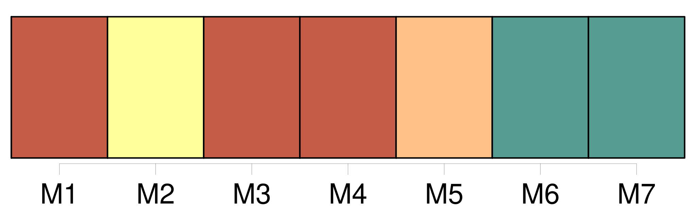
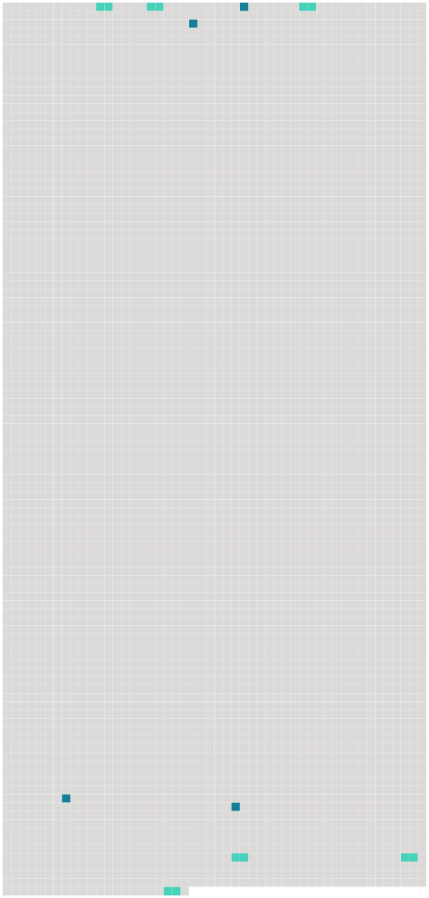

Longueur nb maillons : 10 mentions |
 |
Le mari pourra demander le divorce pour cause d'adultère de [sa femme] [1 phrases]
[La femme] pourra demander le divorce pour cause d'adultère de [son] mari, lorsqu'il aura tenu [sa concubine] dans la maison commune. [5 phrases]
Le consentement mutuel et persévérant des époux, exprimé de la manière prescrite par la loi, sous les conditions et après les épreuves qu' [elle] détermine prouvera suffisamment que la vie commune leur est insupportable et qu'il existe, par rapport à eux une cause péremptoire de divorce. [180 phrases]
Quelle que soit la personne à laquelle les enfans seront confiés les père et [mère] conserveront respectivement le droit de surveiller l'entretien et l'éducation de leurs enfans et seront tenus d'y contribuer à proportion de leurs faculté. [1 phrases]
La dissolution du mariage par le divorce admis en justice ne privera les enfans nés de ce mariage, d'aucuns des avantages qui leur étaient assurés par les lois, ou par les conventions matrimoniales de leurs père et [mère] ; mais il n'y aura d'ouverture aux droits des encans que de la même manière et dans les mêmes circonstances où ils se seraient ouverts s'il n'y avait pas eu de divorce. [11 phrases]
Le mari restera le maître d'arrêter l'effet de cette condamnation, en consentant à reprendre [sa femme] [1 phrases]
Lorsque la séparation de corps prononcée pour toute autre cause que l'adultère de [la femme] , aura duré trois ans, l'époux qui était originairement défendeur, pourra demander le divorce au tribunal, qui l'admettra, si le demandeur originaire, présent ou dûment appelé, ne consent pas immédiatement à faire cesser la séparation. [10 phrases]
Néanmoins celui -ci pourra désavouer l'enfant, s'il prouve que, pendant le temps qui a couru depuis le trois-centième jusqu'au cent-quatre-vingtième jour avant la naissance de cet enfant, il était, soit par cause d'éloignement, soit par l'effet de quelque accident, dans l'impossibilité physique de cohabiter avec [sa femme] |
 |
Il est possible de télécharger la ressource sur la page Ortolang |
Si vous avez des questions ou vous voyez des erreurs, merci d'envoyer un mail à silvia.federzoni89@gmail.com |